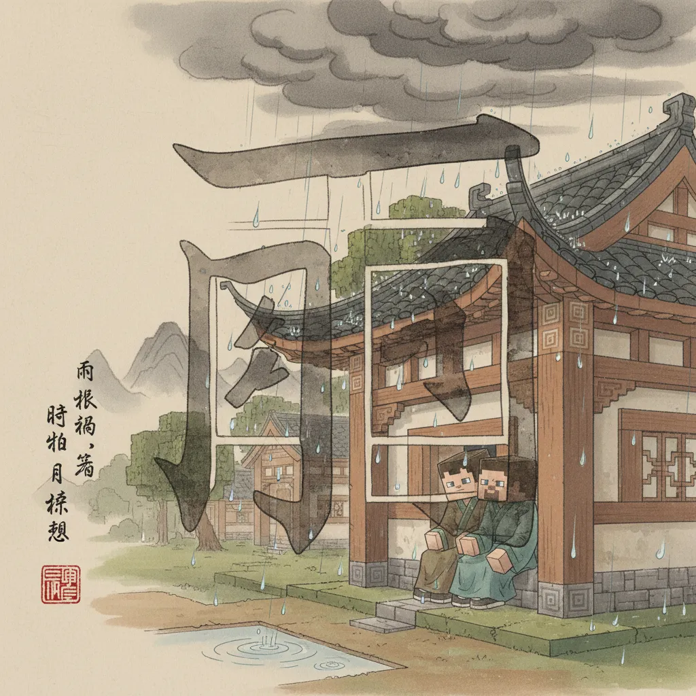
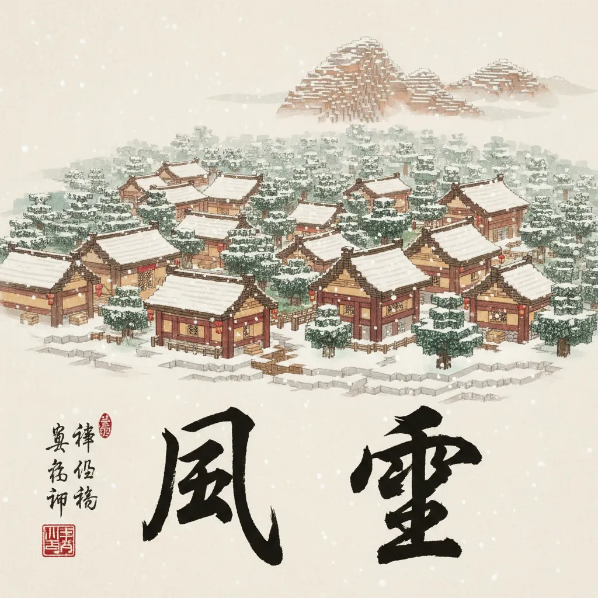
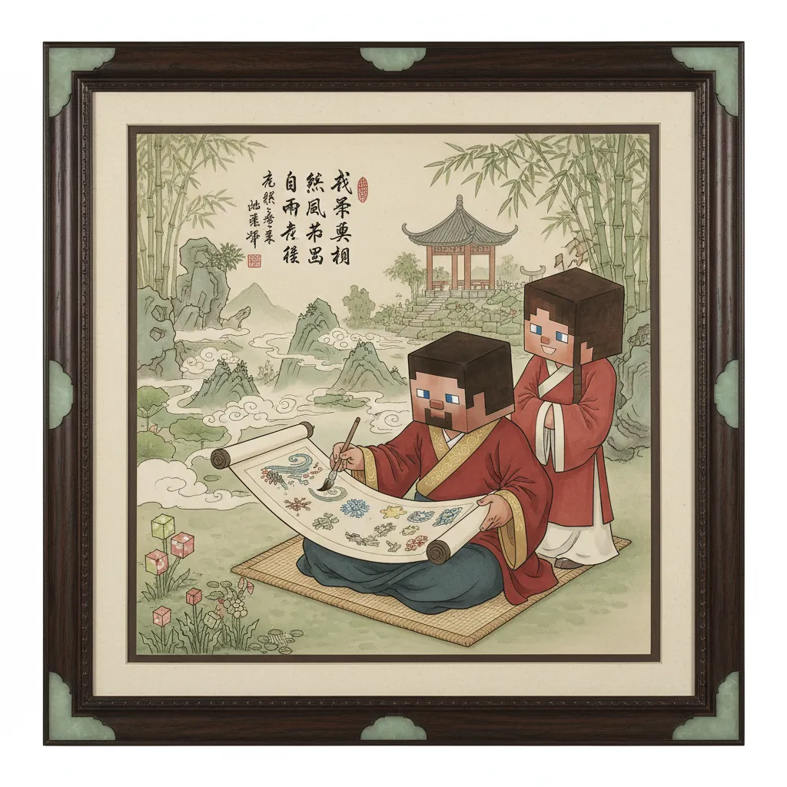

147|
Steve和Alex在村庄安顿下来。
第二天一早出门干活——
天空怎么在变？
148|

149|
刚才还是蓝蓝的天，突然飘来一团团白色的东西。
看，那是 云！
150|
165|
云越来越黑。
"啪！"一滴水掉在Steve头上。
哗啦啦——大雨来了！
166|

167|
这是 雨！快躲起来！
168|
183|
雨停了。呼呼——
突然来了一阵大风，
把Alex的帽子吹飞了！
184|

185|
好大的 风！追我的帽子！
186|
208|
傍晚来临，风雪停了。
Steve和Alex坐在山坡上，
仰头看天。
209|

210|
天上好多小灯！
那是 星星！一颗、两颗、三颗……
211|
214|
星
215|
xīng · 9画
216|
上面"日"是太阳，下面"生"是出生——太阳生的小光点
217|

218|
222|
📖 天上有很多星星。
223|
274|
🌟 大自然的宝藏 🌟
275|

276|
277| 云带来雨，雨后有大风。
278| 冬天有雪，夜晚有星。
279| 春天花开，满山是草。
280| 虫儿爬，鸟儿飞。
281|
282|
 157|
157|  175|
175|  204|
204|  228|
228|  247|
247|  271|
271|  287|
287|